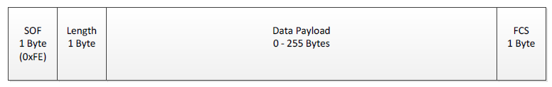

Network Processor Interface (NPI)¶
TI’s Network Processor Interface (NPI) is used for establishing a serial data link between a TI SoC and external MCUs or PCs. It is an abstraction layer above the serial interface (UART or SPI) that handles sending / receiving data power management, and data parsing. It is mainly used by TI’s network processor solutions.
There are two types of NPI used by BLE and they are described in the following sections.
Legacy NPI¶
Note
This section has been updated to use appropriate language. The terms of controller and peripheral replace the terms of master and slave.
Anything that is not specifically “Unified NPI” is Legacy NPI. For example, the hostTest project uses Legacy NPI. For the remainder of this section, NPI will always refer to Legacy NPI
TI provides the source code for NPI and it can be found in the following files at <SDK_INSTALL_DIR>\source\ti\blestack\npi\src:
npi_client_mt.c
npi_frame_hci.c
npi_fram_mt.c
npi_rxbuf.c
npi_task.c
npi_tl.c
npi_tl_spi.c or npi_tl_uart.c
Signaling Protocol¶
Each processor in an NPI solution must occupy either the controller or peripheral role. The TI wireless SoC generally occupies the peripheral role in the network processor examples included in the SDK.
NPI Signaling¶
In order to properly manage the power domains of the device, there must be a way for an external host to wake the network processor from low power modes. This is done through the inclusion of the following pins:
Controller Ready (MRDY): A GPIO pin whose logic level indicates the state of the controller processor. MRDY is an active low (low true) signal. An MRDY event indicates that the controller processor is ready to send or receive data.
Peripheral Ready (SRDY): A GPIO pin whose logic level indicates the state of the peripheral processor. SRDY is an active low (low true) signal. An SRDY event indicates that the peripheral processor is ready to send or receive data.
In the peripheral role, MRDY is an input pin and SRDY is an output in. In the controller role, MRDY is an output pin and SRDY is an input pin.
NPI Handshake¶
In order to start an NPI transaction, there first must occur a handshake sequence using the MRDY and SRDY pins. This handshake is required in order to guarantee that both devices are awake and ready to send and/or receive data. Whichever device first starts the handshake sequence is termed the “initiator”. Either the peripheral or the controller may may be the imitator. The UNPI transaction is completed by the controller raising MRDY followed by the peripheral raising SRDY.
The figures below illustrate both controller and peripheral-initiated NPI transactions


Packet Format¶
The NPI module handles the serial driver-level packet formatting, stripping of the NPI, header and FCS when unpacking. This section will describe the packet format to be used with NPI.
Note
This section does not consider the packet format of the data payload section of the NPI packet format as this is dependent on the NPI use case (i.e. HCI packet format for BLE).
The packet format is dependent on the serial protocol being used and described in the following sections.
SPI¶
In order to understand the structure of the TL packet format, it is necessary to understand the complications inherent in the SPI protocol. The first limitation is that the SPI controller must trigger the clock signal (SCLK) in order to receive bytes from the peripheral. If the peripheral is sending a message, then the controller must know how long this message is in order to receive the complete message. The other limitation of SPI is that if the clock signal is triggered, the controller or peripheral must transmit empty bytes if they have nothing to send. The simple scenario when this occurs is during either a communication sequence where either the controller or peripheral receives only empty bytes. These messages of strictly empty bytes could be easily ignored but the bidirectional message scenario requires more complex handling. If the peripheral and controller are both transmitting non-empty bytes then the shorter message will have to be padded with empty bytes so that the longer message can be fully transmitted. Determining which bytes of message bytes versus empty bytes in this scenario requires message delimitation. In order to handle these limitations of SPI, the NPI SPI Frame is used for all NPI messages sent over SPI.
The NPI SPI Frame has four fields described thus and pictured below:
1 byte Start of Frame (SOF): always 0xFE
1 byte length: length of the data payload field (must be between 0-255 bytes)
0-255 byte Data Payload
1 byte Frame Check Sequence (FCS): calculated by doing a XOR on each byte of the frame in the order they are sent/received on the bus. The SOF byte shall not be included in the FCS calculation.
Figure 113. NPI SPI Packet Format¶
This NPI SPI Frame handles both the delimitation of empty vs non empty data bytes as well as having a fixed length field allowing the SPI controller to know how many times the SCLK signal must be toggled to receive a complete message from the SPI peripheral.
UART¶
Since UART does not have the same inherent complication as SPI, a much simpler frame format can be used. Because UART RX and TX channels are independent of each other, there is no need for a predefined fixed length field, Furthermore, since there are no empty bytes that must be transmitted, each frame does not need to be delimited. Therefore, every byte received over UART RX or TX channels can be treated as a valid byte of data payload. This allows the NPI UART Frame to consist of only a data payload field:

Figure 114. NPI UART Packet Format¶
Message Types¶
Both synchronous and asynchronous messages can be supported by NPI. By default,
only asynchronous messages are supported. Support for synchronous messages can
be compiled into NPI using the compiler define NPI_SREQRSP.
Unified NPI¶
Note
This section has been updated to use appropriate language. The terms of controller and peripheral replace the terms of master and slave.
If Unified NPI is being referenced, it will be specifically referred to as “Unified NPI” or (UNPI). Anything that is not specifically called “Unified NPI” is Legacy NPI. However, the API’s and source files of the UNPI implementation will still always be called “NPI”.
Unified NPI offers some improvements over NPI in that it offers a unified frame format that is used by all transport layers.
TI provides the source code for UNPI and it can be found in the following files at <SDK_INSTALL_DIR>\source\ti\ble5stack\npi\src\unified
npi_task.c
npi_tl.c
npi_tl_spi.c or npi_tl_uart.c
npi_util.c
UNPI Architecture¶
UNPI is implemented as its own TI-RTOS task, and supports inter task communication and routing to the underlying serial interface drivers. See the diagram below for details:
Figure 115. Block Diagram for UNPI¶
UNPI Signaling¶
Each processor in an UNPI solution must occupy either the controller or peripheral role. The TI wireless SoC generally occupies the peripheral role in the network processor examples included in the SDK.
For the remainder of this section, the following terms will be used:
Application Processor ((AP): UNPI Controller (the host MCU)
Network Processor ((NP)): UNPI Peripheral (the TI network processor)
In order to properly manage the power domains of the device, there must be a way for an external host to wake the network processor from low power modes. This is done through the inclusion of the following pins:
Controller Ready (MRDY): A GPIO pin whose logic level indicates the state of the controller processor. MRDY is an active low (low true) signal. An MRDY event indicates that the controller processor is ready to send or receive data.
Peripheral Ready (SRDY): A GPIO pin whose logic level indicates the state of the peripheral processor. SRDY is an active low (low true) signal. An SRDY event indicates that the peripheral processor is ready to send or receive data.
In the peripheral role, MRDY is an input pin and SRDY is an output in. In the controller role, MRDY is an output pin and SRDY is an input pin.
UNPI Handshake¶
In order to start an UNPI transaction, there first must occur a handshake sequence using the MRDY and SRDY pins. This handshake is required in order to guarantee that both devices are awake and ready to send and/or receive data. Whichever device first starts the handshake sequence is termed the “initiator”. Either the peripheral or the controller may may be the imitator. The UNPI transaction is completed by the controller raising MRDY followed by the peripheral raising SRDY.
The figures below illustrate both controller and peripheral-initiated UNPI transactions


{kind=link}
Note
Bidirectional (full-duplex) messaging is also possible with UNPI. See the section below for more details.
Packet Format¶
The Unified NPI packet format consists of the following fields and is pictured below:
1 byte Start of Frame (SOF): always 0xFE
2 byte Length field in little-endian format (so LSB first)
1 byte Type / Subsystem: that contains both message type and subsystem information as such:
Bits[7:5]: Message type, see the message type section for more info
Bits[4:0]: Subsystem ID field, used to help UNPI route the message to the appropriate place.
1 byte command ID: opcode of the command being sent
variable length Payload: the length of the payload is defined by the length field.
1 byte Frame Check Sequence (FCS): calculated by doing a XOR on each byte of the frame in the order they are sent / received on the bus. The SOF byte is always excluded from the FCS calculation.

Figure 118. UNPI Packet Format¶
Message Types¶
There are three message types supported by Unified NPI. The type of message being sent is often dependent on which processor initiated the transaction. The message types are described below.
Code |
Message Type |
|---|---|
0x01 |
Synchronous Request (SREQ) |
0x02 |
Asynchronous Request/Indication (AREQ/AIND) |
0x03 |
Synchronous Response (SRESP) |
Synchronous Messages¶
A Synchronous Request ((SREQ)) is a frame, defined by data content instead of the ordering of events of the physical interface, which is sent from the Host to NP where the next frame sent from NP to Host must be the Synchronous Response ((SRESP)) to that SREQ. Once a SREQ is sent, the UNPI interface blocks until a corresponding response (SRESP) is received.
Asynchronous Messages¶
There are two types of asynchronous messages: asynchronous request ((AREQ)) and asynchronous indication ((AIND)). These messages have the same frame, but the difference lies in whether the transfer was initiated by the network processor (AIND) or the host/application processor (AREQ).
Bidirectional Messaging¶
There are inherently collisions between messages in any protocol that allows asynchronous messaging (where a signal transition denotes the start of a message as with MRDY and SRDY). Instead of requiring intricate collision handling, the UNPI framework allows for bidirectional messaging to occur. This means that data can be sent from the AP to NP and from NP to the AP in the same message window regardless of the handshake order.
While reducing collision handling, bidirectional messaging adds some complexity to what operations must be performed or initiated by each device. For every AIND the NP initiates, it must prepare to both read and write when MRDY is asserted. For every REQ, the AP must prepare to both read and write once SRDY is asserted. Each device will also need to handle any FIFOs that could potentially be overrun during a message and check at the end of every message to see what, if anything, has been received.
The flow chart for bidirectional message is shown here:
Figure 119. UNPI Bidirectional Flow Chart¶
Note
Bidirectional messaging is enabled regardless of power savings options
UNPI Usage¶
Currently, the UNPI protocol has been implemented using the UART and SPI drivers on CC13xx or CC26xx devices. There are certain driver specific settings that should be configured which are defined in the following sections.
Initially, the UNPI task doesn’t initiate the MRDY and SRDY pins; it will let
the pins default to IOID_UNUSED. It is application’s responsibility to define
these pins as such:
1#define MDRY_PIN Board_PIN_BUTTON0 2#define SDRY_PIN Board_PIN_BUTTON1 3... 4// NP Parameters for opening serial port to NP 5static NPI_Params portParams; 6... 7#ifdef NPI_USE_UART 8 NPITask_Params_init(NPI_SERIAL_TYPE_UART, &portParams); 9#elif defined(NPI_USE_SPI) 10 NPITask_Params_init(NPI_SERIAL_TYPE_SPI, &portParams); 11#else 12#error "Must define NPI_USE_UART or NPI_USE_SPI for any project including NPI" 13#endif //NPI_USE_UART 14 portParams.stackSize = NPI_TASK_STACK_SIZE; 15 portParams.mrdyPinID = MDRY_PIN; 16 portParams.srdyPinID = SDRY_PIN; 17 portParams.bufSize = 530; 18 19 // Kick off NPI 20 NPITask_open(&portParams);
UART¶
To use this configuration, the UART project configuration should be selected
(if available). This configuration allows low power modes through the inclusion
of the MRDY and SRDY signals. If a pre-made project configuration is not
included in the SDK, then NPI_USE_UART must be defined as well as including
the CC13xx or CC26xx UART drivers. If power management is needed, be sure to define
POWER_SAVING and use the MRDY/SRDY signals. The NPI task sets up the UART port
with the following settings:
Parameter |
Default Value |
|---|---|
Baud Rate |
115200 |
Data Length |
8 |
Parity |
None |
Stop Bits |
1 |
Flow Control |
None |
Changing the baud rate can be done in the NPITask_Params_init() function as
below:
1UART_Params_init(¶ms->portParams.uartParams); 2params->portParams.uartParams.readDataMode = UART_DATA_BINARY; 3params->portParams.uartParams.writeDataMode = UART_DATA_BINARY; 4params->portParams.uartParams.readMode = UART_MODE_CALLBACK; 5params->portParams.uartParams.writeMode = UART_MODE_CALLBACK; 6params->portParams.uartParams.readEcho = UART_ECHO_OFF; 7params->portParams.uartParams.baudRate= 460800;
SPI¶
In order to allow full duplex communication, the SPI configuration requires the
use of MRDY and SRDY regardless of whether or not power management is enabled.
In order to use SPI, use the project configuration included in the SDK (if
applicable). If a project configuration is unavailable, then NPI_USE_SPI
should be defined as well as including the CC13xx or CC26xx SPI drivers. If power savings
is needed, be sure to define POWER_SAVING.
The NPI task will initialize the SPI with the following parameters
Parameter |
Default Value |
|---|---|
Bit Rate |
800000 |
Data Length |
8 |
Changing the bit rate can be done in the NPITask_Params_init() function as
below:
1SPI_Params_init(¶ms->portParams.spiParams); 2params->portParams.spiParams.mode = SPI_PERIPHERAL; 3params->portParams.spiParams.bitRate = 8000000; 4params->portParams.spiParams.frameFormat = SPI_POL1_PHA1;
Implementing An NPI Controller¶
As stated above, the TI device operates as an NPI peripheral in the network processor use case. This means the external MCU must implement the controller UNPI role. When developing the NPI controller role on an external MCU, there are a couple things to keep in mind:
The NPI controller controls MRDY and thus controls when the NPI frame has completed.
Even when the peripheral is sending data, the controller must use the payload format to determine how many bytes it expects and raise MRDY when it has received them.
Since all packets use the same frame format regardless of protocol, the NPI controller can use the frame format to determine when to raise MRDY.
An example of an NPI controller implementation for UART can be found at <SDK_INSTALL_DIR>\source\ti\ble5stack\npi\src\unified\npi_tl_uart_m.c
Note
NPI_MASTER must be defined as a preprocessor symbol to use the above file.
When toggling MRDY / SRDY it is important to remember the following rules:
Each device must always initiate a read prior to asserting its respective output pin (MRDY with respect to the AP) regardless of the state of the its respective input pin (SRDY with respect to the AP).
Each device can only begin to write (or clock data in the case of SPI) once both MRDY and SRDY are asserted.
NPI limitations¶
The serial interface (SPI or UART) leveraged by the network processor to report data to the host processor has limited throughput. Systems designers should take this limitation into account, and make sure the amount of data reported by the network processor can be handled by the throughput offered by the serial link. Otherwise data and stack overflow may occur which lead to unexpected behaviors.
Note
Projects based on the host_test example may be affected by the limitation
described above. In that case the error UTIL_SystemErrorEvent with
status INVALID_INTERRUPT_ID may be raised.
Stack overflow can also be detected leveraging Debugging guide.
Long scan operations in busy environment lead the network processor to report significant amount of data. The amount of data reported can be estimated considering the number of scan results expected and the size of each scan report.
Data overflow risks can be reduced by increasing the throughput of the serial interface and/or reducing the amount of data reported.
The data throughput offered by the serial interface can be increased by changing the baudrate / bitrate. SPI generally offers higher throughput than UART. Device’s datasheet and drivers’ documentation provide details on the maximum throughputs supported by each serial interface.
The amount of data reported can be reduced following three approaches.
Reduce the scan duty cycle i.e. the ratio scan window vs scan interval
Enable filtering when scanning (see the section related to Obtain Advertising Channel from Advertising Report in the GAP Scanner documentation).
Shorten the reports sent through the serial interface by reducing the number of fields reported.
Details on the way to implement these approaches are provided in the GAP Scanner section and in the BLE Stack API Reference (see the section about the GAP Scanner).